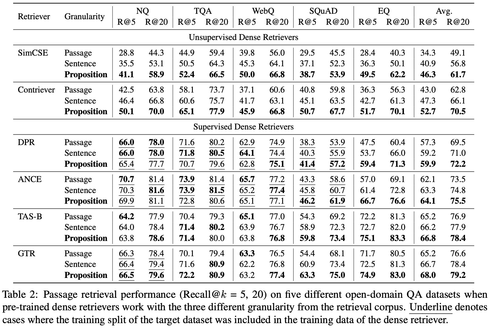
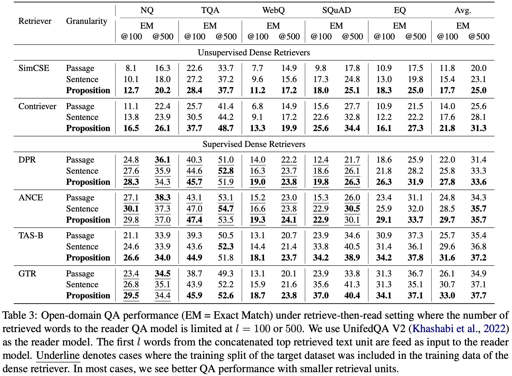

Dense retrieval has become a prominent method to obtain relevant context or world knowledge in open-domain NLP tasks. When we use a learned dense retriever on a retrieval corpus at inference time, an often-overlooked design choice is the retrieval unit in which the corpus is indexed, e.g. document, passage, or sentence. We discover that the retrieval unit choice significantly impacts the performance of both retrieval and downstream tasks. Distinct from the typical approach of using passages or sentences, we introduce a novel retrieval unit, proposition, for dense retrieval. Propositions are defined as atomic expressions within text, each encapsulating a distinct factoid and presented in a concise, self-contained natural language format. We conduct an empirical comparison of different retrieval granularity. Our results reveal that proposition-based retrieval significantly outperforms traditional passage or sentence-based methods in dense retrieval. Moreover, retrieval by proposition also enhances the performance of downstream QA tasks, since the retrieved texts are more condensed with question-relevant information, reducing the need for lengthy input tokens and minimizing the inclusion of extraneous, irrelevant information.
We introduces the concept of using propositions as retrieval units in dense retrieval systems. Propositions are atomic expressions within text, encapsulating a distinct factoid and presented in a concise, self-contained natural language format.
To segment the Wikipedia pages into propositions, we finetune a text generation model, which we refer to as the Propositionizer.
We demonstrates that retrieval by propositions shows significant improvements in cross-task generalization. This is particularly evident in settings where the retriever model has not been trained on the target dataset.
We finds that using propositions as retrieval units results in a higher density of question-related information. This is due to each proposition encapsulating an atomic expression in the text, ensuring that the retrieved content contains minimal extraneous information, thus proving advantageous for subsequent question-answering tasks.
@article{chen2023densex,
title={Dense X Retrieval: What Retrieval Granularity Should We Use?},
author={Tong Chen and Hongwei Wang and Sihao Chen and Wenhao Yu and Kaixin Ma and Xinran Zhao and Hongming Zhang and Dong Yu},
journal={arXiv preprint arXiv:2312.06648},
year={2023},
URL = {https://arxiv.org/pdf/2312.06648.pdf}
}